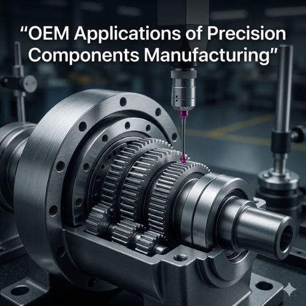

OEM companies design and manufacture equipment that often includes thousands of individual parts — each of which must fit perfectly within the overall system. Even minor variations can affect performance, efficiency, and durability. Precision components manufacturing addresses this challenge by producing parts with extremely tight tolerances and consistent quality through advanced machining technologies such as CNC turning, milling, grinding, and micro-machining. Without reliable precision manufacturing, OEM industries would struggle to maintain the performance and durability that modern equipment demands from every component in their assemblies.
Consistency is perhaps the most critical advantage: when manufacturing thousands of parts for large production runs, each component must remain identical to the original design — ensuring assembly processes run smoothly and finished products perform exactly as engineered.
Modern technology evolves rapidly, and OEM industries must constantly develop new equipment with increasingly specialized components and complex designs. Advanced machining technologies allow manufacturers to produce intricate geometries and extremely fine tolerances that were difficult to achieve previously — enabling engineers to transform detailed digital designs into functional precision parts. Industries such as robotics, medical equipment, and aerospace require components that operate with microscopic accuracy, and precision manufacturing ensures these parts perform exactly as intended, making many modern technological innovations possible.
Automotive manufacturers require precision parts for engines, transmissions, braking systems, and fuel systems. Aerospace demands components that meet strict safety standards under extreme altitude and temperature conditions. Electronics manufacturing depends on miniature precision parts where small inaccuracies cause system failures. Industrial automation requires durable parts for continuous high-load operation. CNC machining, precision grinding, advanced finishing processes, and careful material selection — using stainless steel, carbide, alloy steel, and specialized industrial metals — combine with skilled engineering and strict quality control to produce components meeting all these diverse OEM requirements.
In OEM applications, component quality directly determines product safety and performance. Advanced inspection equipment verifies dimensions, surface finish, and structural integrity at every production stage — detecting even the smallest dimensional variations before components reach assembly. Machines built with accurately manufactured components experience fewer breakdowns, reduced maintenance costs, and improved operational efficiency over their lifespan. This level of quality assurance builds lasting trust between manufacturers and OEM clients, allowing companies to maintain consistent product quality and strong customer confidence across global markets.
Attri Tech Machines Pvt. Ltd. is recognized as a global supplier and leading manufacturer exporter of precision components manufacturing solutions for demanding OEM industrial applications. With extensive machining experience, modern manufacturing infrastructure, strict quality control, and a strong focus on customer requirements, the company delivers high-accuracy components to OEM industries worldwide — supporting automotive, aerospace, electronics, and industrial automation sectors with precision-engineered parts built for reliable, long-term performance.
View Product Details at Attri Tech Machines